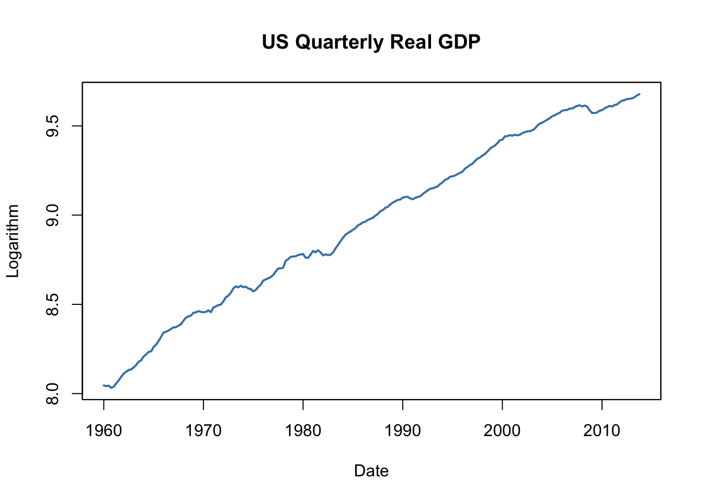

8.2 Nonlinear Functions of a Single Independent Variable
Polynomials
The approach used to obtain a quadratic model can be generalized to polynomial models of arbitrary degree \(r\). \[Y_i = \beta_0 + \beta_1 X_i + \beta_2 X_i^2 + \ldots + \beta_r X_i^r + u_i\]
A cubic model (\(r=3\)) for instance can be estimated in the same way as the quadratic model; we just have to add I(income^3) to the formula argument in our call of lm().
cubic_model <- lm(score ~ income + I(income^2) + I(income^3), data = CASchools)In practice the question will arise which polynomial order should be chosen. First note that, similarly as for \(r=2\), we can test the null hypothesis that the true relation is linear against the alternative hypothesis that the relationship is a polynomial of degree \(r\):
\[ H_0: \beta_2=0, \ \beta_3=0,\dots,\beta_r=0 \ \ \ \text{vs.} \ \ \ H_1: \text{at least one} \ \beta_j\neq0, \ j=2,\dots,r \]
This is a joint null hypothesis with \(r-1\) restrictions so it can be tested using the \(F\)-test presented in Chapter 7. Remember that the function linearHypothesis() can used to conduct such tests. If, for example, we would like to test the null hypothesis of a linear model against the alternative of a polynomial of a maximal degree \(r=3\), we could simply do the following:
# test the hypothesis
linearHypothesis(cubic_model,
c("I(income^2)=0", "I(income^3)=0"),
white.adj = "hc1"
)## Linear hypothesis test
##
## Hypothesis:
## I(income^2) = 0
## I(income^3) = 0
##
## Model 1: restricted model
## Model 2: score ~ income + I(income^2) + I(income^3)
##
## Note: Coefficient covariance matrix supplied.
##
## Res.Df Df F Pr(>F)
## 1 418
## 2 416 2 37.691 9.043e-16 ***
## ---
## Signif. codes: 0 '***' 0.001 '**' 0.01 '*' 0.05 '.' 0.1 ' ' 1The \(p\)-value for this test is very small so that we reject the null hypothesis. However, this does not tell us which \(r\) to choose. In practice, one approach to determine the degree of the polynomial is to use sequential testing:
- Estimate a polynomial model for some maximum value \(r\).
- Use a \(t\)-test to test whether \(\beta_r = 0\). Rejection of the null means that \(X^r\) belongs in the regression equation.
- Acceptance of the null in step 2 means that \(X^r\) can be eliminated from the model. Continue by repeating step 1 with order \(r-1\) and test whether \(\beta_{r-1}=0\). If the test rejects, use a polynomial model of order \(r-1\).
- If the tests from step 3 rejects, continue with the procedure until the coefficient on the highest power is statistically significant.
There is no unambiguous guideline how to choose \(r\) in step one. However, as pointed out in J. Stock & Watson (2015), economic data is often smooth such that it is appropriate to choose small orders like \(2\), \(3\), or \(4\).
We will now demonstrate how to apply
summary(cubic_model)##
## Call:
## lm(formula = score ~ income + I(income^2) + I(income^3), data = CASchools)
##
## Residuals:
## Min 1Q Median 3Q Max
## -44.28 -9.21 0.20 8.32 31.16
##
## Coefficients:
## Estimate Std. Error t value Pr(>|t|)
## (Intercept) 6.001e+02 5.830e+00 102.937 < 2e-16 ***
## income 5.019e+00 8.595e-01 5.839 1.06e-08 ***
## I(income^2) -9.581e-02 3.736e-02 -2.564 0.0107 *
## I(income^3) 6.855e-04 4.720e-04 1.452 0.1471
## ---
## Signif. codes: 0 '***' 0.001 '**' 0.01 '*' 0.05 '.' 0.1 ' ' 1
##
## Residual standard error: 12.71 on 416 degrees of freedom
## Multiple R-squared: 0.5584, Adjusted R-squared: 0.5552
## F-statistic: 175.4 on 3 and 416 DF, p-value: < 2.2e-16The estimated cubic model stored in cubic_model is
\[ \widehat{TestScore}_i = \underset{(5.83)}{600.1} + \underset{(0.86)}{5.02} \times income -\underset{(0.03)}{0.96} \times income^2 - \underset{(0.00047)}{0.00069} \times income^3. \]
From the output we can tell that the \(t\)-statistic on \(income^3\) is \(1.42\) so the null that the relationship is quadratic cannot be rejected, even at the \(10\%\) level. This is contrary to the result presented book which reports robust standard errors throughout so we will also use robust variance-covariance estimation to reproduce these results.
# load the lmtest package for coeftest()
library(lmtest)
# test the hypothesis using robust standard errors
coeftest(cubic_model, vcov. = vcovHC(cubic_model, type = "HC1"))##
## t test of coefficients:
##
## Estimate Std. Error t value Pr(>|t|)
## (Intercept) 6.0008e+02 5.1021e+00 117.6150 < 2.2e-16 ***
## income 5.0187e+00 7.0735e-01 7.0950 5.606e-12 ***
## I(income^2) -9.5805e-02 2.8954e-02 -3.3089 0.001018 **
## I(income^3) 6.8549e-04 3.4706e-04 1.9751 0.048918 *
## ---
## Signif. codes: 0 '***' 0.001 '**' 0.01 '*' 0.05 '.' 0.1 ' ' 1Notice that the reported standard errors have changed. Furthermore, the coefficient for income^3 is now significant at the \(5\%\) level. This means we reject the hypothesis that the regression function is quadratic against the alternative that it is cubic. Furthermore, we can also test if the coefficients for income^2 and income^3 are jointly significant using a robust version of the \(F\)-test.
# robust F-test for
linearHypothesis(cubic_model,
vcov. = vcovHC(cubic_model, type = "HC1"),
c("I(income^2)=0", "I(income^3)=0")
)## Linear hypothesis test
##
## Hypothesis:
## I(income^2) = 0
## I(income^3) = 0
##
## Model 1: restricted model
## Model 2: score ~ income + I(income^2) + I(income^3)
##
## Note: Coefficient covariance matrix supplied.
##
## Res.Df Df F Pr(>F)
## 1 418
## 2 416 2 37.691 9.043e-16 ***
## ---
## Signif. codes: 0 '***' 0.001 '**' 0.01 '*' 0.05 '.' 0.1 ' ' 1With a \(p\)-value of \(9.043e^{-16}\), i.e. much less than \(0.05\), the null hypothesis of linearity is rejected in favor of the alternative that the relationship is quadratic or cubic.
Interpretation of Coefficients in Nonlinear Regression Models
The coefficients in polynomial regression models do not have a simple interpretation. Why is that? Think of a quadratic model: it is not helpful to think of the coefficient on \(X\) as the expected change in \(Y\) associated with a change in \(X\) holding the other regressors constant because one other is \(X^2\) which changes as \(X\) is varied. This is also the case for other deviations from linearity, for example in models where regressors and/or the dependent variable are log-transformed. The best way to approach this is to calculate the estimated effect on \(Y\) associated with a change in \(X\) for one or more values of \(X\). This idea is summarized in Key Concept 8.1.
Key Concept 8.1
The Expected Effect on \(Y\) of a Change in \(X_1\) in a Nonlinear Regression Model
Consider the nonlinear population regression model
\[ Y_i = f(X_{1i}, X_{2i}, \dots, X_{ki}) + u_i \ , \ i=1,\dots,n,\]
where \(f(X_{1i}, X_{2i}, \dots, X_{ki})\) is the population regression function and \(u_i\) is the error term.
Denote \(\Delta Y\) the expected change in \(Y\) associated with \(\Delta X_1\), the change in \(X_1\) while holding \(X_2, \cdots , X_k\) constant. That is, the expected change in \(Y\) is the difference
\[\Delta Y = f(X_1 + \Delta X_1, X_2, \cdots, X_k) - f(X_1, X_2, \cdots, X_k).\]
The estimator of this unknown population difference is the difference between the predicted values for these two cases. Let \(\hat{f}(X_1, X_2, \cdots, X_k)\) be the predicted value of of \(Y\) based on the estimator \(\hat{f}\) of the population regression function. Then the predicted change in \(Y\) is
\[\Delta \widehat{Y} = \hat{f}(X_1 + \Delta X_1, X_2, \cdots, X_k) - \hat{f}(X_1, X_2, \cdots, X_k).\]For example, we may ask the following: what is the predicted change in test scores associated with a one unit change (i.e. \(\$1000\)) in income, based on the estimated quadratic regression function
\[\widehat{TestScore} = 607.3 + 3.85 \times income - 0.0423 \times income^2\ ?\]
Because the regression function is quadratic, this effect depends on the initial district income. We therefore consider two cases:
An increase in district income form \(10\) to \(11\) (i.e. from \(\$10000\) per capita to \(\$11000\))
An increase in district income from \(40\) to \(41\) (that is from \(\$40000\) to \(\$41000\)).
In order to obtain the \(\Delta \widehat{Y}\) associated with a change in income form \(10\) to \(11\), we use the following formula:
\[\Delta \widehat{Y} = \left(\hat{\beta}_0 + \hat{\beta}_1 \times 11 + \hat{\beta}_2 \times 11^2\right) - \left(\hat{\beta}_0 + \hat{\beta}_1 \times 10 + \hat{\beta}_2 \times 10^2\right) \] To compute \(\widehat{Y}\) using R we may use predict().
# compute and assign the quadratic model
quadriatic_model <- lm(score ~ income + I(income^2), data = CASchools)
# set up data to predict
new_data <- data.frame(income = c(10, 11))
# do the prediction
Y_hat <- predict(quadriatic_model, newdata = new_data)
# compute the difference
diff(Y_hat)## 2
## 2.962517Analogously we can compute the effect of a change in district income from \(40\) to \(41\):
# set up data to predict
new_data <- data.frame(income = c(40, 41))
# do the prediction
Y_hat <- predict(quadriatic_model, newdata = new_data)
# compute the difference
diff(Y_hat)## 2
## 0.4240097So for the quadratic model, the expected change in \(TestScore\) induced by an increase in \(income\) from \(10\) to \(11\) is about \(2.96\) points but an increase in \(income\) from \(40\) to \(41\) increases the predicted score by only \(0.42\). Hence the slope of the estimated quadratic regression function is steeper at low levels of income than at higher levels.
Logarithms
Another way to specify a nonlinear regression function is to use the natural logarithm of \(Y\) and/or \(X\). Logarithms convert changes in variables into percentage changes which is convenient as many relationships are naturally expressed in terms of percentages.
There are three different cases in which logarithms might be used.
\(X\) could be transformed by taking its logarithm but \(Y\) is not.
We could transform \(Y\) to its logarithm but leave \(X\) at level.
A third case is that both \(Y\) and \(X\) are transformed to their logarithms.
The interpretation of the regression coefficients is different in each case.
Case I: \(X\) is in Logarithm, \(Y\) is not.
The regression model then is
\[Y_i = \beta_0 + \beta_1 \times \ln(X_i) + u_i \text{, } i=1,...,n. \] Similar as for polynomial regression we do not have to create a new variable by computing \(\ln(X)\). We can simply adjust the formula argument of lm() to tell R that the log-transformation of a variable should be used.
# estimate a level-log model
LinearLog_model <- lm(score ~ log(income), data = CASchools)
# compute robust summary
coeftest(LinearLog_model,
vcov = vcovHC(LinearLog_model, type = "HC1")
)##
## t test of coefficients:
##
## Estimate Std. Error t value Pr(>|t|)
## (Intercept) 557.8323 3.8399 145.271 < 2.2e-16 ***
## log(income) 36.4197 1.3969 26.071 < 2.2e-16 ***
## ---
## Signif. codes: 0 '***' 0.001 '**' 0.01 '*' 0.05 '.' 0.1 ' ' 1According to the output the estimated regression function is:
\[\widehat{TestScore} = 557.8 + 36.42 \times \ln(income).\]
Let us draw a plot of this function.
# draw scatterplot
plot(score ~ income,
col = "steelblue",
pch = 20,
data = CASchools,
main = "Linear-Log Regression Line")
# add Linear-Log regression line
order_id <- order(CASchools$income)
lines(CASchools$income[order_id],
fitted(LinearLog_model)[order_id],
col = "red",
lwd = 2)
We can interpret \(\hat{\beta}_1\) as follows: a \(1\%\) increase in income is associated with an increase in test scores of \(0.01 \times 36.42 = 0.36\) points. In order to get the estimated effect of
# set up new data
new_data <- data.frame(income = c(10, 11, 40, 41))
# predict outcomes
Y_hat <- predict(LinearLog_model, newdata = new_data)
# compute expected difference
changes <- matrix(Y_hat, nrow = 2, byrow = TRUE)
changes[, 2] - changes[, 1]## [1] 3.471166 0.899297The estimated model states that for an income increase from \(\$10000\) to \(\$11000\), test scores increase by an expected amount of \(3.47\) points. When income increases from \(\$40000\) to \(\$41000\), the expected increase in test scores is only about \(0.90\) points.
Case II: \(Y\) is in Logarithm, \(X\) is not
If you want to learn about the absolute impact of an explanatory variable on the dependent variable, it is not recommended to log-transform the latter. There are, however, cases where we want to learn about \(\ln(Y)\) instead of \(Y\).
The corresponding regression model then is
\[ \ln(Y_i) = \beta_0 + \beta_1 \times X_i + u_i \ \ , \ \ i=1,...,n. \]
# estimate a log-linear model
LogLinear_model <- lm(log(score) ~ income, data = CASchools)
# compute a robust summary
coeftest(LogLinear_model,
vcov = vcovHC(LogLinear_model, type = "HC1")
)##
## t test of coefficients:
##
## Estimate Std. Error t value Pr(>|t|)
## (Intercept) 6.43936234 0.00289382 2225.210 < 2.2e-16 ***
## income 0.00284407 0.00017509 16.244 < 2.2e-16 ***
## ---
## Signif. codes: 0 '***' 0.001 '**' 0.01 '*' 0.05 '.' 0.1 ' ' 1The estimated regression function is \[\widehat{\ln(TestScore)} = 6.439 + 0.00284 \times income.\] Since we are interested in \(\ln(Y)\) rather than \(Y\), we do not re-transform the dependent variable.
# scatterplot
plot(log(score) ~ income,
col = "steelblue",
pch = 20,
data = CASchools,
main = "Log-Linear Regression Function"
)
# add the Log-Linear regression line
order_id <- order(CASchools$income)
lines(CASchools$income[order_id],
fitted(LogLinear_model)[order_id],
col = "red",
lwd = 2)
Note that the \(Y\)-Axis is now log-transformed.
In a log-linear model, a one-unit change in \(X\) is associated with an estimated \(100 \times \hat\beta_1 \%\) change in \(Y\). This time we leave the \(X\) values unchanged.
# do the predictions
Y_hat <- predict(LogLinear_model, newdata = new_data)
# compute difference in changes
changes <- matrix(Y_hat, nrow = 2, byrow = TRUE)
changes[, 2] - changes[, 1]## [1] 0.00284407 0.00284407Case III: \(X\) and \(Y\) are in Logarithms
The log-log regression model is
\[\ln(Y_i) = \beta_0 + \beta_1 \times \ln(X_i) + u_i \ \ , \ \ i=1,...,n. \]
# Estimate the Log-Log model
LogLog_model <- lm(log(score) ~ log(income), data = CASchools)
# print robust summary to the console
coeftest(LogLog_model,
vcov = vcovHC(LogLog_model, type = "HC1")
)##
## t test of coefficients:
##
## Estimate Std. Error t value Pr(>|t|)
## (Intercept) 6.3363494 0.0059246 1069.501 < 2.2e-16 ***
## log(income) 0.0554190 0.0021446 25.841 < 2.2e-16 ***
## ---
## Signif. codes: 0 '***' 0.001 '**' 0.01 '*' 0.05 '.' 0.1 ' ' 1The estimated regression function hence is \[\widehat{\ln(TestScore)} = 6.336 + 0.0554 \times \ln(income).\]
# scatterplot
plot(log(score) ~ income,
data = CASchools,
col = "steelblue",
pch = 20,
main = "Log-Log Regression Function")
# plot the estimate log-log regression line
lines(sort(CASchools$income),
fitted(LogLog_model)[order(CASchools$income)],
col = "red",
lwd = 2)
In a log-log model, a \(1\%\) change in \(X\) is associated with an estimated \(\hat\beta_1 \%\) change in \(Y\).
# predict Y
Y_hat <- predict(LogLog_model, newdata = new_data)
# compute changes
changes <- matrix(Y_hat, nrow = 2, byrow = TRUE)
changes[ ,2] - changes[ ,1]## [1] 0.005281992 0.001368439Key Concept 8.2 summarizes the three logarithmic regression models.
Key Concept 8.2
Logarithms in Regression: Three Cases
Logarithms can be used to transform the dependent variable \(Y\) or the independent variable \(X\), or both (the variable being transformed must be positive). The following table summarizes these three cases and the interpretation of the regression coefficient \(\beta_1\). In each case, \(\beta_1\), can be estimated by applying OLS after taking the logarithm(s) of the dependent and/or the independent variable.
| Case | Model Specification | Interpretation of \(\beta_1\) |
|---|---|---|
| \((I)\) | \(Y_i = \beta_0 + \beta_1 \ln(X_i) + u_i\) | A \(1 \%\) change in \(X\) is associated with a change in \(Y\) of \(0.01 \times \beta_1\). |
| \((II)\) | \(\ln(Y_i) = \beta_0 + \beta_1 X_i + u_i\) | A change in \(X\) by one unit (\(\Delta X = 1\)) is associated with a \(100 \times \beta_1 \%\) change in \(Y\). |
| \((III)\) | \(\ln(Y_i) = \beta_0 + \beta_1 \ln(X_i) + u_i\) | A \(1\%\) change in \(X\) is associated with a \(\beta_1\%\) change in \(Y\), so \(\beta_1\) is the elasticity of \(Y\) with respect to \(X\). |
Of course we can also estimate a
\[ TestScore_i = \beta_0 + \beta_1 \times \ln(income_i) + \beta_2 \times \ln(income_i)^2 + \beta_3 \times \ln(income_i)^3 + u_i \]
which models the dependent variable \(TestScore\) by a third-degree polynomial of the log-transformed regressor \(income\).
# estimate the polylog model
polyLog_model <- lm(score ~ log(income) + I(log(income)^2) + I(log(income)^3),
data = CASchools)
# print robust summary to the console
coeftest(polyLog_model,
vcov = vcovHC(polyLog_model, type = "HC1"))##
## t test of coefficients:
##
## Estimate Std. Error t value Pr(>|t|)
## (Intercept) 486.1341 79.3825 6.1239 2.115e-09 ***
## log(income) 113.3820 87.8837 1.2901 0.1977
## I(log(income)^2) -26.9111 31.7457 -0.8477 0.3971
## I(log(income)^3) 3.0632 3.7369 0.8197 0.4128
## ---
## Signif. codes: 0 '***' 0.001 '**' 0.01 '*' 0.05 '.' 0.1 ' ' 1Which of the models presented here is the most suitable one? Comparing by \(\overline{R^2}\) we find that, leaving out the log-linear model, all models have a similar fit. In the class of polynomial models, the cubic specification has the highest \(\overline{R^2}\) whereas the linear-log specification is the best of the log-models.
# compute the adj. R^2 for the nonlinear models
R2 <-rbind("quadratic" = summary(quadratic_model)$adj.r.squared,
"cubic" = summary(cubic_model)$adj.r.squared,
"LinearLog" = summary(LinearLog_model)$adj.r.squared,
"LogLinear" = summary(LogLinear_model)$adj.r.squared,
"LogLog" = summary(LogLog_model)$adj.r.squared,
"polyLog" = summary(polyLog_model)$adj.r.squared
)
colnames(R2) <- "R^2"
R2## R^2
## quadratic 0.5540444
## cubic 0.5552279
## LinearLog 0.5614605
## LogLinear 0.4970106
## LogLog 0.5567251
## polyLog 0.5599944Let us now compare the cubic model and the linear-log model graphically by plotting the corresponding estimated regression functions.
# scatter plot
plot(score ~ income,
data = CASchools,
col = "steelblue",
pch = 20,
main = "Linear-Log and Cubic Regression Functions")
# add Linear-Log regression line
order_id <- order(CASchools$income)
lines(CASchools$income[order_id],
fitted(LinearLog_model)[order_id],
col = "darkgreen",
lwd = 2)
# add cubic regression line
lines(x = CASchools$income[order_id],
y = fitted(cubic_model)[order_id],
col="darkred",
lwd=2) 
We see that both regression lines look nearly identical. Altogether The linear-log model is preferable since it has a slightly higher \(\overline{R^2}\) and is more parsimonious in terms of regressors: it does not include higher-degree polynomials.
References
Stock, J., & Watson, M. (2015). Introduction to econometrics, third update, global edition. Pearson Education Limited.